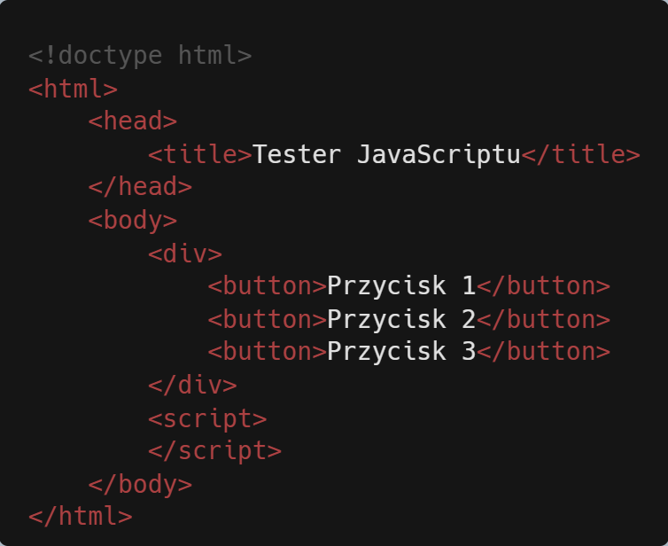

Spróbuj podejścia alternatywnego do zaimplementowania logiki podobnej do
użytej w praktycznym ćwiczeniu 10.7. Wykorzystaj przedstawiony tutaj kod
HTML jako szablon dla ćwiczenia, a utworzony kod umieść w elemencie
<script>.

Wykonaj wymienione tutaj kroki.
output().
output() powinna zawierać metodę
console.log()
wyświetlającą wartość właściwości textContent bieżącego obiektu. Do
obiektu nadrzędnego można się odwołać za pomocą słowa kluczowego this.
output().